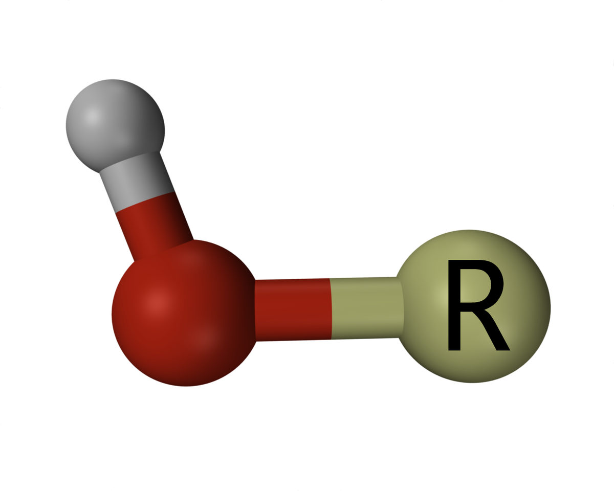

Contest Problems
1.Introduction
The vast and intricate world of drug discovery has always been on the frontier of technological advancements.
As we navigate the complex molecular interactions underlying medical therapies, there's an increasing emphasis on computational techniques to aid our endeavors.
The recent rise of quantum computing offers a promising avenue to revolutionize drug discovery, offering potential solutions to problems previously considered insurmountable using classical computation [1].
One such fundamental entity in the realm of pharmacology is the hydroxyl (·OH). Known for its significant role in various physiological and pathological processes,
the hydroxyl is not just a simple molecule but a pivot around which many drug interactions revolve.
This highly reactive species plays a role in oxidative stress, leading to numerous diseases such as neurodegenerative disorders, cardiovascular diseases, and even cancers.
It is also a core component of many drug compounds, contributing to their therapeutic effects.
Given its prominence, understanding the quantum mechanics of the hydroxyl at an intricate level can significantly impact drug discovery processes. A fundamental starting point is the accurate determination of its ground state energy. This knowledge can serve as a cornerstone, upon which more complex drug-radical interactions can be built. However, the quantum realm is notoriously challenging. With the current limitations in qubit numbers and quantum error rates, comprehensive simulations of larger drug molecules remain a distant goal. This is where the elegance of the hydroxyl radical comes into play. Its relatively smaller size offers a feasible task for current quantum computing capabilities, making it an ideal candidate for a quantum simulation challenge.

2.Objective
The goal of the 2023 Challenge is to calculate the ground state energy of the hydroxyl (·OH).
We ask participants to design and implen1 a working, open-source protocol that can automatically calcualte the ground state energy of the hydroxyl (·OH) from the give hamiltonian. We enable as large as the freedom in design space as we can. Participants can propose good qubits mapping strategy by codesign by hardware and software; classical shadow can be potentially implemented to reduce the shots on observable to save the cost on quantum resources; AI/ML or scientific-based circuit architecture search framwork could give a good ansatz for better performance; AI/ML or scientific-based error mitigation can also helps for better performance; last but not least, the experience of optimizer, initial paramter or initial scaling of the parameter are important topic for this challenge.
3.Data
The data provided for this challenge revolves around the central theme of drug discovery, focusing on the fundamental quantum mechanics of the hydroxyl (·OH). As a pivotal entity in numerous drug interactions and physiological processes, an intricate understanding of the hydroxyl radical is crucial. To aid participants in this endeavor, we've curated a specialized dataset tailored to encapsulate the of the hydroxyl's hamiltonian. We have provided the the hamiltonian for reference.
4.Data Format
All data is formatted in text. The text file contains the Pauli strings and corresponding coefficiencies of the hydroxyl's hamiltonian by Jordan-Wigner mapping [2]. Participants can generate different format of the description of the hydroxyl's hamiltonian by prefered tools, but we restricted the fermionic mapping method should be the Jordan-Wigner mapping [2], which should be 12 qubits and 631 pauli strings.
5. IBM Qiskit Platform, System & Noise Model from Real Quantum Processor Backend
We acknowledge the use of IBM Quantum services for this contest. Qiskit [3] is an open-source quantum computing framework primarily developed by IBM. It offers tools for creating and manipulating quantum programs and running them on prototype quantum devices and simulators. Designed with modularity in mind, Qiskit provides components that cater to all aspects of quantum computing, from foundational elements to more advanced quantum algorithms. In the contemporary realm of quantum computing, noise poses a significant challenge [4]. As such, we urge all participants to consider the inherent noise when designing their quantum algorithms or circuits. Qiskit [3] offers tools that facilitate the simulation of quantum algorithms or circuits as if executed on an actual quantum device, complete with the associated noise. Simulating a quantum system, complemented with a noise model, is imperative to gain insights into the potential performance of quantum algorithms on current NISQ (Noisy Intermediate-Scale Quantum) devices [4]. We acknowledge that while participants might be inclined to optimize basis gates at the pulse level to curtail the duration of the quantum circuit and thereby conserve quantum resources [5], characterizing a time-dependent noise model from a real quantum machine poses challenges for us. We regretfully must resort to using the standard gate-based noise model for evaluating circuits. However, in the spirit of fairness, we will compute the relative decoherence fidelity and adjust your circuit performance accordingly [6].
The IBM qiskit platform is open for public and easy to access online. However, if you do need support, please contact us.
6.Scoring
We will employ specific metrics to evaluate the submitted algorithms. The assessment encompasses the accuracy in estimating the ground state energy, the consumption of quantum resources (number of shots and duration of the quantum circuit), and the demand on classical computational resources (number of iterations and number of parameters). Specifically, the precision of the ground state energy estimation accounts for 40% of the total score, the consumption of quantum resources represents another 40%, and the demand on classical computational resources contributes the remaining 20%. More detailed scoring criteria will be updated shortly.
7.Example Code
We have provided an example algorithm to illustrate how to train the model.
8.Special Thanks
We are appreciate the valuable discussion provided by following people: Feng Qian (Tufts University, US), Hang Ren (University of California, Bekerley).
9.References
[1] Cao, Yudong, Jhonathan Romero, and Alán Aspuru-Guzik. "Potential of quantum computing for drug discovery." IBM Journal of Research and Development 62.6 (2018): 6-1.
[2] Tranter, Andrew, et al. "A comparison of the Bravyi-Kitaev and Jordan-Wigner transformations for the quantum simulation of quantum chemistry." Journal of chemical theory and computation 14.11 (2018): 5617-5630.
[3] Aleksandrowicz, Gadi, et al. "Qiskit: An open-source framework for quantum computing." Accessed on: Mar 16 (2019).
[4] Preskill, John. "Quantum computing in the NISQ era and beyond." Quantum 2 (2018): 79.
[5] Earnest, Nathan, Caroline Tornow, and Daniel J. Egger. "Pulse-efficient circuit transpilation for quantum applications on cross-resonance-based hardware." Physical Review Research 3.4 (2021): 043088.
[6] McKinney, Evan, et al. "Parallel Driving for Fast Quantum Computing Under Speed Limits." Proceedings of the 50th Annual International Symposium on Computer Architecture. 2023.